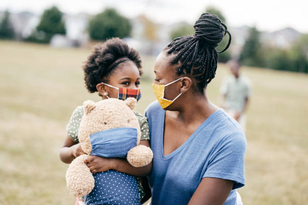

Eau Potable
Aujourd'hui, près de la moitié de la population mondiale qui n'a pas accès à des sources améliorées d'eau
potable vit en Afrique subsaharienne et 700 millions de personnes de la région n'ont pas accès à des
services d'assainissement. La population ayant quasiment doublé au cours des 25 dernières années dans la
région, l'accès à l'assainissement y a progressé de seulement 6% et l'accès à l'eau de 20% au cours de
la même période. Des millions de personnes sont donc laissées pour compte.

Protection Enfants
Protéger les enfants, ce n’est pas imposer notre vision de ce qui est « bon » pour eux, mais réfléchir
avec les communautés à leur sécurité et leur intégrité. Il existe des règles fixées par la Déclaration
des Droits de l’Enfant des Nations-Unies, sur lesquelles nous nous appuyons pour développer des
solutions adaptées aux problématiques locales.
Dans toutes nos actions, nous avons une approche globale des enjeux : pour protéger les enfants, il faut
stabiliser l’économie locale, s’appuyer sur les structures et les décideurs existants, sensibiliser
progressivement les communautés et, bien sûr, mobiliser les enfants dès le début des échanges.

Développement Economique
Les inégalités dans le monde restent importantes et constituent un obstacle majeur au développement. Même
si des progrès considérables ont été accomplis ces 20 dernières années, plus de 700 millions de
personnes vivent toujours en dessous du seuil de pauvreté extrême, dont plus de la moitié se trouve en
Afrique.
Près d’1,4 milliard de travailleurs occupaient un emploi précaire en 2017 et ce chiffre continue
d’augmenter. Dans les pays en développement, l’emploi précaire touche 3 travailleurs sur 4. Par
ailleurs, le taux d’activité mondial des femmes en 2018 était de 48 %, contre 75% pour les hommes. Cela
signifie que pour dix hommes ayant un emploi, seules 6 femmes en ont un.